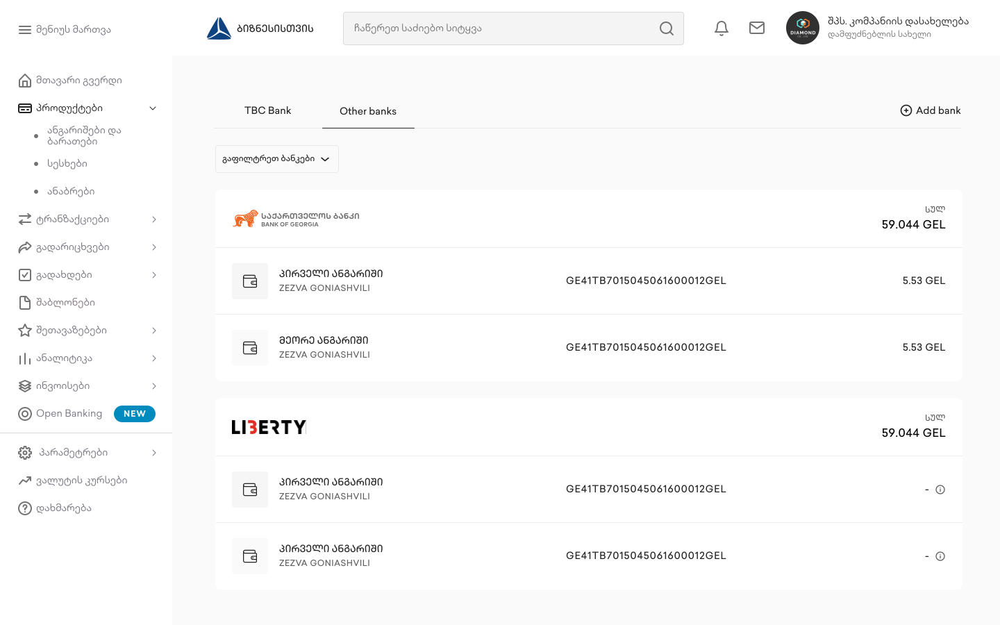
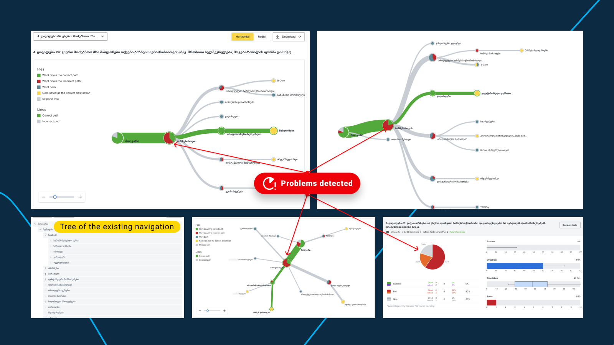

TBC Bank · Banking
Business Internet Bank redesign — winner of Global Finance's “Best Online Portal” 2021

Across TBC's digital estate · 2016 – 2022
Years of feature growth had buried TBC's Business Internet Bank under navigation that no longer matched how businesses actually work.
The platform carried the full set of operations a company needs to run its finances, but usage data and a documented problem set showed users struggling to find core operations and spending too long on routine tasks. The brief wasn't a facelift — it was to prove, with evidence, whether a full redesign was justified, and then to deliver it.
I'd been at TBC since 2016, joining as a UX Designer and building the design-system foundation the bank's products were built on. This redesign — my last year there — is where that foundation was put to its hardest test, and I led it end-to-end with product, business and engineering.
Diagnose before redesigning — tree testing on the live navigation isolated exactly where the information architecture broke.
I ran the study against the existing menu so the rebuild stood on evidence rather than internal assumptions about where features “should” live. Every task path was scored for success, directness and time-on-task; the detected breakpoints became the redesign backlog.

An IA organised around how businesses operate — not around how the bank is organised.
I rearchitected the information architecture and the core flows around the task paths the research proved people actually take, trading the legacy menu for a structure that cut time-on-task on the highest-frequency operations.
A platform, not a screen set — new features and enhanced flows built on shared, reusable patterns.
The platform runs on the atomic design system I'd founded — components composed from the smallest parts up, so every screen resolves back to the same tokens and patterns. That's what kept the experience coherent as the product grew: the same components carry an account's card and transaction history and a packaged-pricing comparison, and each release added capability without adding inconsistency.
Also part of the work
- Started from quantitative data, business goals and the documented problem set — arguing that a structural redesign, not incremental patching, was the right investment.
- Established a repeatable research-based design process, tracked with Google's HEART framework against NPS, time-on-task and conversion.
The result: Global Finance's “Best Online Portal” 2021 — and a research-led approach that carried across TBC's whole digital estate.
The redesigned platform took the category in Global Finance's World's Best Corporate/Institutional Digital Banks Awards 2021, recognition leadership tied directly to the business internet bank. The same approach lifted Business Mobile Bank NPS from 55 to 64, raised corporate-intranet engagement by 20%, cut website drop-off by 7%, and improved loan and savings calculator lead conversion by 12%. Looking back, I'd have instrumented navigation analytics from day one — tree testing found the breakages, but continuous funnel data would have caught them sooner.
Information architecture · tree testing · UX research · measurement (HEART) · design systems · interaction design · stakeholder alignment
Let's talk
Open to senior product-design roles across Poland — hybrid or remote, B2B or employment contract.